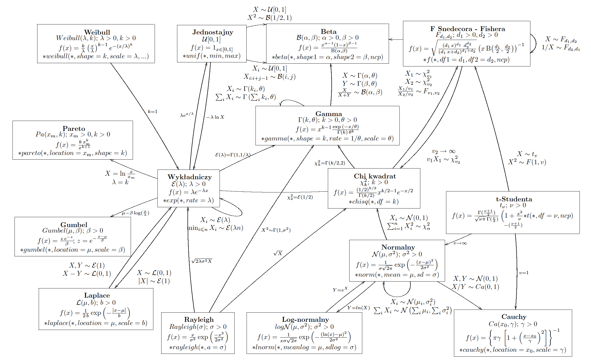
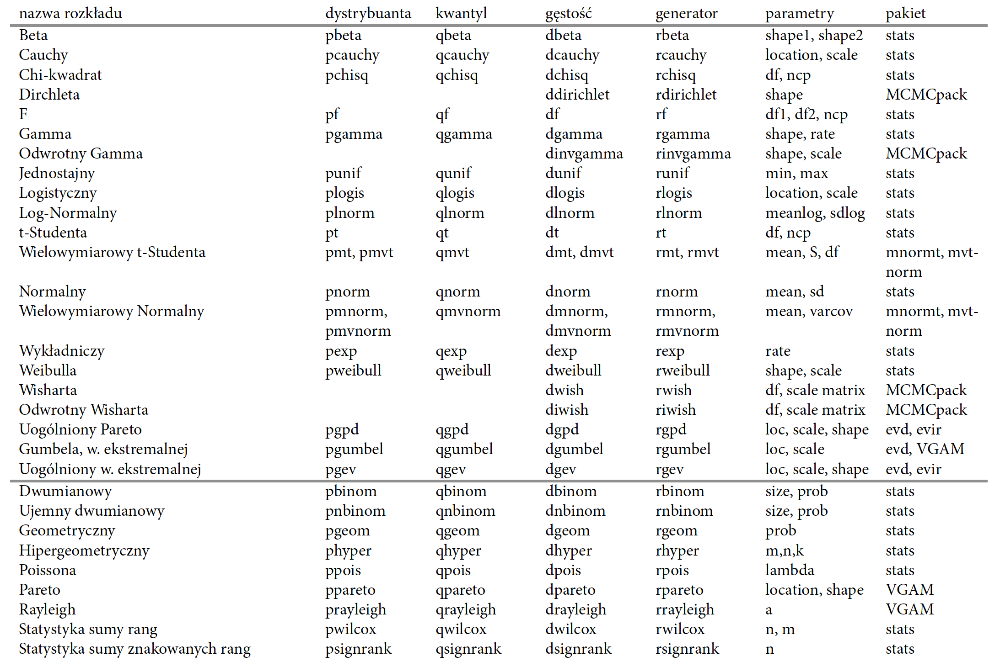
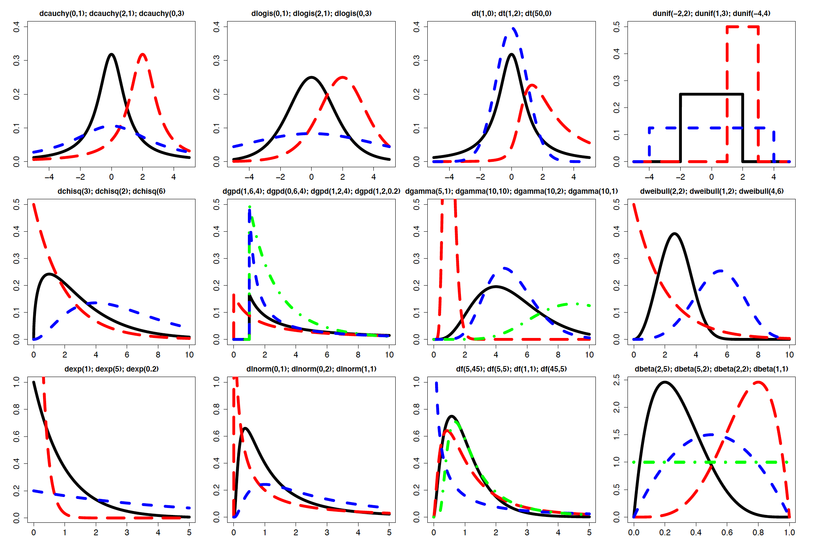

Popularne rozkłady zmiennych losowych
W programie R dostępnych jest wiele funkcji do obsługi większości popularnych i wielu mniej popularnych rozkładów zmiennych losowych. W tym podrozdziale skupimy się na jednowymiarowych zmiennych losowych. Osoby poszukujące generatorów zmiennych wielowymiarowych z pewnością zainteresuje pakiet copula.
Nazewnictwo funkcji związanych ze zmiennymi losowymi jest zestandaryzowane. Nazwy funkcji składają się z dwóch członów, opisanych na poniższym schemacie.
Schemat nazw funkcji związanych z rozkładami zmiennych losowych.
[prefix][nazwa.rodziny.rozkładów]()
Poniżej w kolejnych liniach losujemy pięć liczb z rozkładu jednostajnego. Wyznaczamy wartość dystrybuanty rozkładu jednostajnego w punkcie 0.5. Wyznaczamy wartość gęstości rozkładu jednostajnego w punkcie 0.5. Wyznaczamy wartość kwantyla rozkładu jednostajnego rzędu 0.1.
set.seed(1313)
runif(5)
## [1] 0.27578588 0.06637362 0.82379757 0.52979504 0.91424061
punif(0.5)
## [1] 0.5
dunif(0.5)
## [1] 1
qunif(0.1)
## [1] 0.1
Suffix nazwa.rodziny.rozkładów określa jakiej rodziny rozkładów dana funkcja dotyczy. Wszystkich rodzin rozkładów dostępnych w programie R jest wiele, przegląd popularniejszych znajduje się w poniższej tabeli. Prefix jest jednoliterowym markerem, określającym co chcemy z tym rozkładem zrobić. Prefix może być jedną z liter:
- Litera
r(jak random) rozpoczyna nazwę funkcji - generatora liczb losowych. Taka funkcja generuje próbę prostą o liczebnościn(pierwszy argument funkcji) z określonego rozkładu. - Litera
p(jak probability) rozpoczyna nazwę funkcji wyznaczającej wartości dystrybuanty danego rozkładu w punktach określonych przez wektorx(pierwszy argument tych funkcji). - Litera
d(jak density) rozpoczyna nazwę funkcji wyznaczającej wartości gęstości (dla rozkładów ciągłych) lub prawdopodobieństwa (dla rozkładów dyskretnych) danego rozkładu w punktach określonych przez wektorx(pierwszy argument tych funkcji). - Litera
q(jak quantile) rozpoczyna nazwę funkcji wyznaczającej wartości kwantyli danego rozkładu w punktachq(pierwszy argument tych funkcji).
Pozostałe argumenty tych funkcji określają parametry rozkładu w wybranej rodzinie rozkładów. Dla funkcji wyznaczających gęstość lub dystrybuantę można określić argument log.p. Jeżeli argumentem jest log.p=TRUE, to wynikiem funkcji są logarytmy zamiast oryginalnych wartości. Operowanie na logarytmach z gęstości w pewnych sytuacjach możne zmniejszyć błędy numeryczne.

Zależności pomiędzy wybranymi rodzinami rozkładów zmiennych losowych. Strzałki pomiędzy rozkładami opisują jak przekształcić zmienną jednego rozkładu na zmienną innego rozkładu. Dla każdego rozkładu podana jest funkcja gęstości oraz parametryzacja w R

Lista funkcji dla wybranych rozkładów prawdopodobieństwa ciągłe - powyżej poziomej linii i dyskretne - poniżej

Gęstości dla przykładowych parametrów wybranych rozkładów ciągłych. Nagłówki wskazują parametry gęstości rysowanych kolejno: linią ciągłą, szeroko kreskowaną, wąsko kreskowaną i mieszaną
Przykładowo licząc logarytm funkcji wiarygodności zamiast liczyć logarytm z iloczynu gęstości, bardziej dokładne wyniki otrzymamy dodając logarytmy z poszczególnych wartości gęstości.
Listę funkcji stowarzyszonych do najpopularniejszych rozkładów zmiennych losowych znaleźć można w powyższej tabeli. Jednym z najbardziej znanych rozkładów zmiennych losowych jest rozkład normalny, nazywany też rozkładem Gaussa. Na powyższym rysunku przedstawiona jest gęstość i dystrybuanta standardowego rozkładu normalnego. Wykres został wygenerowany przez następujące polecenia (zwróć uwagę jak uzyskano podwójne osie Y).
W poniższym przykładzie w pierwszej linii wybieramy punkty, w których wyznaczymy gęstość i dystrybuantę. Następnie rysujemy gęstość.
x <- seq(-4,4,by=0.01)
plot(x, dnorm(x), type="l", lwd=3, cex.axis=1.5, cex.lab=1.5)

Na tym samym rysunku chcemy narysować dystrybuantę. Wymaga to użycia innej osi OY, dlatego zmieniamy współrzędne w wyświetlanym oknie graficznym. Teraz oś Y ma przyjmować wartości od -0.04 do 1.04.
par(usr=c(-4,4,-0.04,1.04))
Dorysowujemy dystrybuantę, teraz współrzędne są już w nowym układzie.
lines(x, pnorm(x), lty=2, lwd=3, cex.axis=1.5, cex.lab=1.5)
## Error in plot.xy(xy.coords(x, y), type = type, ...): plot.new has not been called yet
Dodajemy oś OY po prawej stronie, współrzędne w nowym układzie.
axis(side=4, cex.axis=1.5, cex.lab=1.5)
## Error in axis(side = 4, cex.axis = 1.5, cex.lab = 1.5): plot.new has not been called yet
mtext(side=4, "pnorm()", line=2.5, cex.axis=1.5, cex=1.5)
## Error in mtext(side = 4, "pnorm()", line = 2.5, cex.axis = 1.5, cex = 1.5): plot.new has not been called yet
Funkcje z pakietu stats do generowania liczb i wyznaczania charakterystyk z rozkładu normalnego to pnorm(), dnorm(), qnorm() i rnorm(). Poniżej przedstawiamy ich deklaracje. Funkcje dla innych rozkładów mają bardzo podobne deklaracje z dokładnością do nazwy parametrów rozkładów.
dnorm(x, mean=0, sd=1, log = FALSE)
pnorm(q, mean=0, sd=1, lower.tail = TRUE, log.p = FALSE)
qnorm(p, mean=0, sd=1, lower.tail = TRUE, log.p = FALSE)
rnorm(n, mean=0, sd=1)
Rozkład normalny opisywany jest dwoma parametrami: średnią i odchyleniem standardowym. Standardowy rozkład normalny ma średnią równą 0 i odchylenie standardowe równe 1, są to też domyślne wartości argumentów mean i sd. Zmiana argumentu lower.tail=TRUE powoduje, że dystrybuanta liczona jest jako , gdy argument lower.tail=FALSE, to wyznaczana jest wartość , czyli dopełnienie dystrybuanty.
Zgodnie z regułą ,,trzy sigma'' prawdopodobieństwo, że zmienna losowa o standardowym rozkładzie normalnym przyjmie wartość mniejszą od -3 lub większą od 3 jest bardzo małe. Jeżeli pamiętamy czym jest dystrybuanta oraz wiemy, że wartości dystrybuanty w programie R wyznaczyć można funkcją pnorm(), to z łatwością wyznaczymy ww. prawdopodobieństwo.
Prawdopodobieństwo wylosowania normalnego wartości lub .
pnorm(-3) + (1 - pnorm(3))
## [1] 0.002699796
Wartość gęstości rozkładu normalnego w punktach , i .
dnorm(-1:1, mean=0, sd=1)
## [1] 0.2419707 0.3989423 0.2419707
Najpopularniejsze kwantyle rozkładu normalnego.
qnorm(c(0.001, 0.025, 0.05, 0.5, 0.95, 0.975, 0.999))
## [1] -3.090232 -1.959964 -1.644854 0.000000 1.644854 1.959964 3.090232
Poniżej pokażemy jak wylosować dziesięć liczb z rozkładu normalnego o średniej 2 i odchyleniu stndardowym równym 1.
rnorm(10, mean = 2, sd = 1)
## [1] -0.28140986 1.88012302 1.74946975 1.93769408 1.42249021
## [6] 2.37735514 2.30747717 3.91551395 -0.02528017 3.19469911
Oba argumenty, zarówno średnia jak i odchylenie standardowe mogą być wektorami.
rnorm(10, mean = 1:10, sd=1:10)
## [1] -0.08446439 2.15179185 2.06169327 6.10689980 2.27811716
## [6] 13.45986916 7.02084979 1.12729296 7.76597042 12.72887850
Z pozostałych rozkładów korzysta się równie prosto.
Na powyższym rysunku przedstawiono przykładowy rozkład ciągłej zmiennej losowej określonej na przedziale [0,1]. Na tym rysunku zaznaczono podstawowe charakterystyki rozkładu ciągłej zmiennej losowej, takie jak wartość średnia, mediana, moda (dominanta), kwartyl górny i dolny oraz kwantyl rzędu 0.9 (nazywany też 90. percentylem lub 9. decylem).
Inne materiały
Na stronie http://www.math.wm.edu/~leemis/chart/UDR/UDR.html znaleźć można bogatą listę 76 rozkładów oraz zależności pomiędzy rozkładami. Dla każdego rozkładu znajduje się też opis oraz charakterystyka.
Z nazwy, czy postaci gęstości trudno jest określić co charakteryzuje rozkład. Przydatne mogą być w tym celu diagramy, przedstawiające różne rodziny rozkładów w przestrzeni ilorazów momentów http://www.math.wm.edu/~leemis/2010jqt.pdf, http://www.math.wm.edu/~leemis/2010jqt.Plot3.pdf, http://www.math.wm.edu/~leemis/2010jqt.Plot4.pdf.